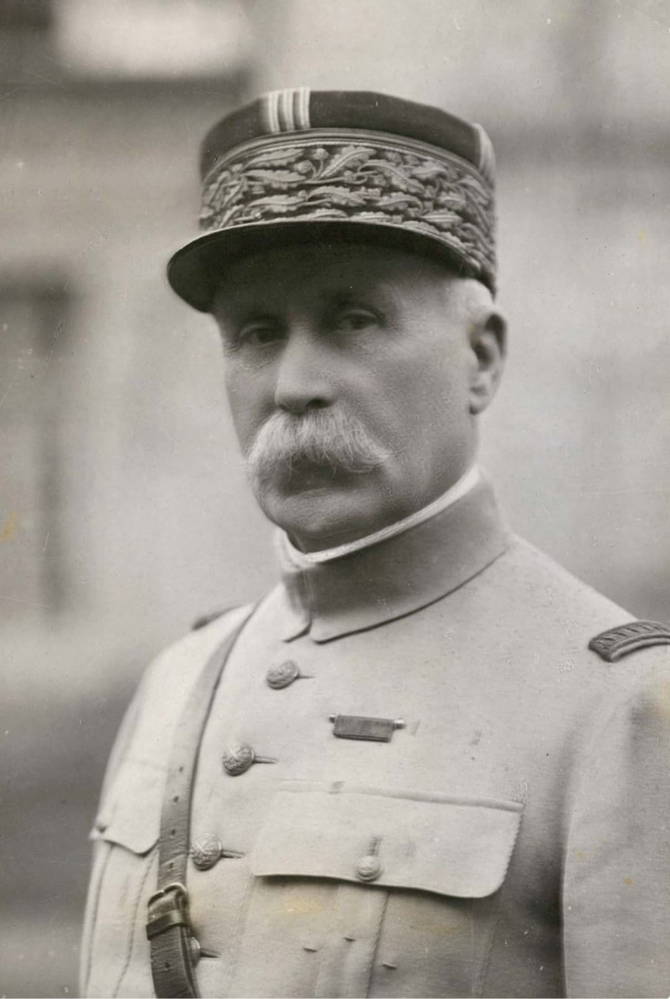
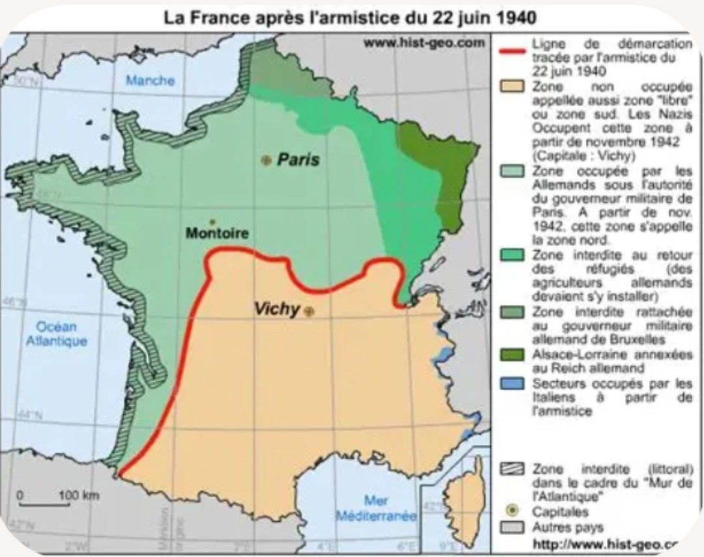
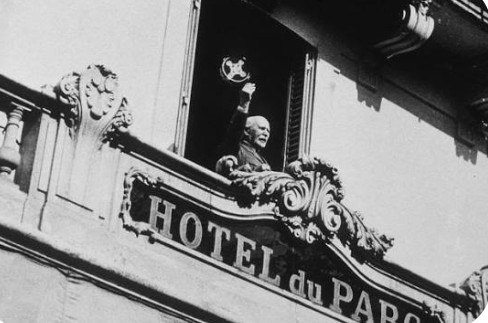
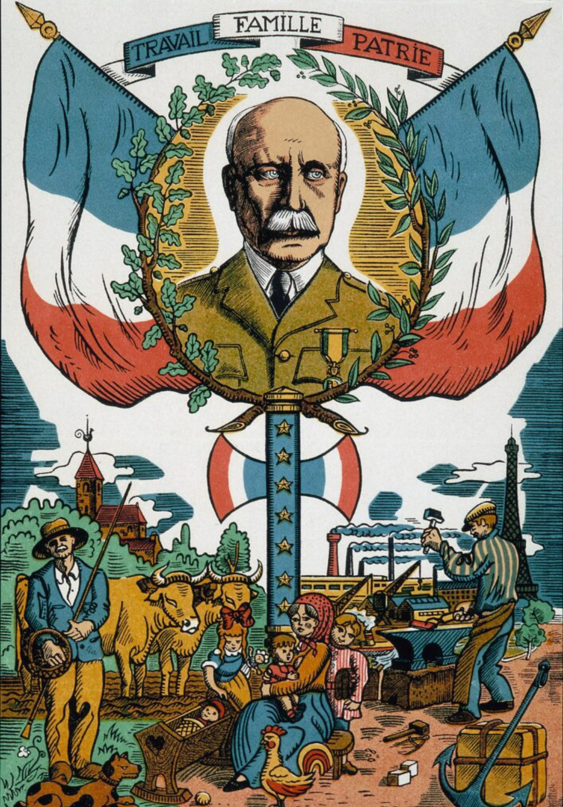

Le régime de Vichy, dirigé par le maréchal Philippe Pétain, est instauré après la défaite française de juin 1940. Il remplace la République par un État autoritaire, basé à Vichy, et engage une politique de collaboration avec l’Allemagne nazie.
Cette collaboration est considérée par les historiens comme une trahison de la République et des valeurs démocratiques françaises.
En juin 1940, l’armée française est vaincue. Le gouvernement demande l’armistice. Le pays est alors divisé :

Le siège du gouvernement est installé à Vichy, dans l’Hôtel du Parc. Pétain concentre les pouvoirs :

Dès octobre 1940, Pétain rencontre Hitler à Montoire. Le régime s’engage dans une collaboration politique, économique et policière.
Cette collaboration est considérée comme une trahison car :

Le régime promeut la Révolution nationale, fondée sur :
Vichy adopte des lois antisémites sans y être forcé par l’Allemagne. Les Juifs sont :
La police française participe directement aux rafles, dont celle du Vel d’Hiv en 1942.
En 1944, la Libération met fin au régime de Vichy. Pétain est arrêté, jugé pour haute trahison et condamné. Le régime est officiellement reconnu comme une collaboration criminelle.